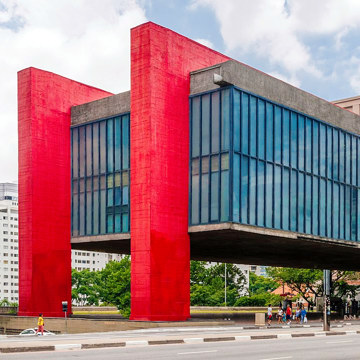
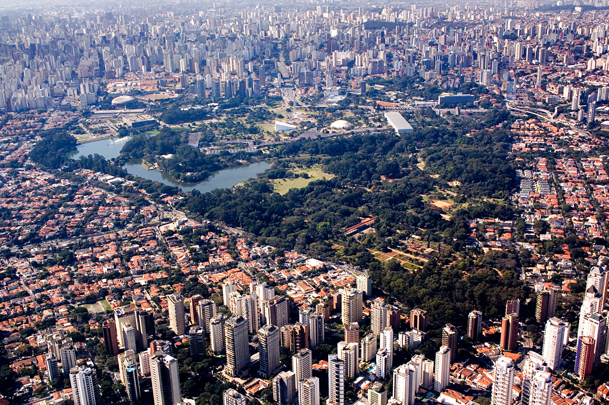

Sao Paulo - największe miasto Ameryki Południowej
São Paulo, największe miasto Brazylii i jedno z największych na świecie, jest dynamicznym ośrodkiem kultury, biznesu, sztuki i rozrywki. Jego historia sięga czasów kolonialnych, a różnorodność kulturowa czyni je wyjątkowym miejscem na mapie świata. Poniżej znajdziesz szczegółowy opis historii, kultury oraz atrakcji São Paulo.
Historia
São Paulo zostało założone 25 stycznia 1554 roku przez jezuitów Manuela da Nóbregę i José de Anchietę, którzy założyli misję religijną mającą na celu nawracanie rdzennych mieszkańców na chrześcijaństwo. Misja została nazwana São Paulo, na cześć św. Pawła. W pierwszych wiekach swojej historii miasto pozostawało niewielką osadą.
Przełomowym momentem w historii São Paulo był XIX wiek, gdy region zaczął odgrywać kluczową rolę w gospodarce Brazylii dzięki uprawie i handlowi kawy. Plantatorzy kawy, zwani "baronami kawy", zgromadzili ogromne bogactwa, co przyczyniło się do rozwoju infrastruktury, budowy kolei i napływu imigrantów, głównie z Europy i Azji.
Na początku XX wieku São Paulo przeżywało boom przemysłowy. Napływ imigrantów, zwłaszcza Włochów, Japończyków, Niemców i Hiszpanów, ukształtował multikulturową tożsamość miasta. São Paulo stało się centrum finansowym i przemysłowym Brazylii, przyciągając ludzi z całego kraju.
Dziś São Paulo jest globalnym megamiastem, będącym sercem gospodarki Brazylii. Miasto jest także ważnym centrum kulturalnym, znanym z festiwali, galerii sztuki, muzeów i różnorodności gastronomicznej.
Kultura
Kultura São Paulo odzwierciedla bogatą mieszankę wpływów z całego świata. Imigranci, którzy przybyli do miasta w XIX i XX wieku, wnieśli swoje tradycje, które zostały wchłonięte przez dynamiczną kulturę miejską.
São Paulo jest jednym z najbardziej zróżnicowanych kulturowo miast na świecie. Znajdziesz tu dzielnice etniczne, takie jak: Liberdade, dzielnica japońska, gdzie znajduje się największa społeczność Japończyków poza Japonią; Bixiga, znana z włoskich wpływów i pizzerii; Bom Retiro, dzielnica o silnych korzeniach żydowskich, a obecnie również koreańskich.
Miasto również jest idealnym miejscem dla miłośników muzyki i sztuki. Właśnie tutaj organizowanych jest wiele festwiali, m.in. São Paulo Art Biennial, jedno z najważniejszych wydarzeń artystycznych w Ameryce Południowej.
São Paulo jest uważane za stolicę kulinarną Brazylii. Miasto oferuje zarówno kuchnię lokalną, jak i międzynarodową. Wśród popularnych dań znajduje się feijoada, coxinha i pizza paulistana.
Atrakcje
São Paulo oferuje wiele atrakcji dla turystów, od kulturalnych i historycznych po nowoczesne i rozrywkowe.
Avenida Paulista to symbol nowoczesności São Paulo i jedno z najbardziej znanych miejsc w mieście. Przy tej ruchliwej alei znajdują się biura, muzea, galerie oraz kawiarnie. Szczególnie popularnym punktem jest Muzeum Sztuki São Paulo (MASP) – ikoniczny budynek, znany z jednej z najlepszych kolekcji sztuki w Ameryce Łacińskiej.
Parque Ibirapuera to zielone serce miasta, idealne miejsce na odpoczynek od zgiełku metropolii. W parku znajdują się również ważne obiekty kulturalne, takie jak Pawilon Biennale, Muzeum Sztuki Nowoczesnej (MAM), Audytorium Ibirapuera, zaprojektowane przez Oscara Niemeyera
Liberdade to centrum kultury japońskiej w São Paulo, pełne restauracji serwujących sushi, sklepów z japońskimi produktami oraz tradycyjnych festiwali, takich jak Targ Liberdade w każdą niedzielę.
Mercado Municipal to zabytkowy targ, na którym można spróbować lokalnych specjałów, takich jak słynna mortadela sandwich czy świeże owoce tropikalne.